แนะนำการต่อวงจรเสมือนจริงร่วมกับบอร์ด Arduino Uno ด้วยซอฟต์แวร์ AUTODESK Tinkercad Circuits#
บทความนี้กล่าวถึง การฝึกต่อวงจรบนเบรดบอร์ดและใช้งานร่วมกับบอร์ด Arduino แบบเสมือนจริง รวมถึงแนะนำการเขียนโค้ด Arduino Sketch ในเบื้องต้น
Keywords: Circuit Simulation, Arduino Uno, Tinkercad Circuits
- ซอฟต์แวร์ AUTODESK Tinkercad Circuits
- โหมดการเขียนโค้ด Block หรือ Text
- ตัวอย่างโค้ด LED Blink และการจำลองการทำงานแบบอินเทอร์แอคทีฟ
- การใช้งานมัลติมิเตอร์เสมือนจริง (Multimeter)
- การใช้งานเครื่องมือวัดสัญญาณเสมือนจริง (Oscilloscope)
▷ ซอฟต์แวร์ AUTODESK Tinkercad Circuits#
ซอฟต์แวร์ Tinkercad Circuits เป็นซอฟต์แวร์ที่ใช้ในการฝึกออกแบบและต่อวงจรไฟฟ้า-อิเล็กทรอนิกส์ และจำลองการทำงานได้เสมือนจริง (Circuit Simulation & Virtual Circuit Prototyping) โดยใช้งานผ่านเว็บเบราว์เซอร์และผู้ใช้ไม่จำเป็นต่อติดตั้งซอฟต์แวร์ใด ๆ
นอกจากอุปกรณ์ชิ้นส่วนไฟฟ้าและอิเล็กทรอนิกส์พื้นฐานที่มีให้เลือกใช้งานอยู่หลายชนิด ก็ยังมีบอร์ดไมโครคอนโทรลเลอร์ Arduino Uno ให้ลองใช้งานและฝึกเขียนโค้ดได้ภายใต้การทำงานของ Tinkercad Circuits - Simulator
เมื่อเข้าใช้งาน Tinkercad Circuits ให้ลองค้นหาอุปกรณ์ด้วยคำว่า
arduino uno r3 ก็จะพบว่า มีรายการอุปกรณ์ที่เกี่ยวข้อง เช่น
บอร์ด Arduinio Uno R3 ในกลุ่ม "Microcontrollers"
และมีตัวอย่างวงจรสาธิต (พร้อมโค้ดตัวอย่าง) ในกลุ่ม "Starters"
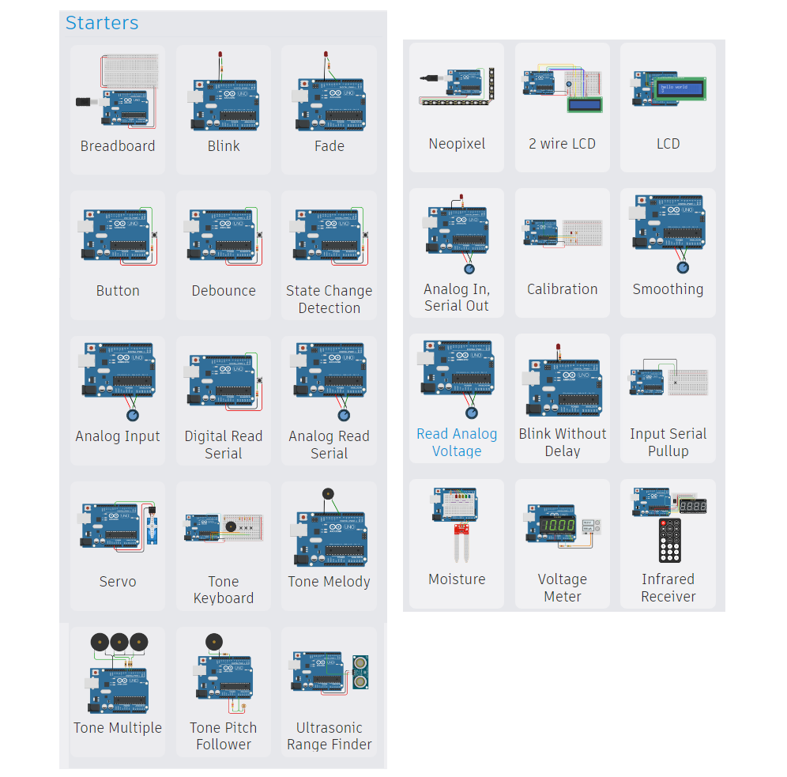
รูป: วงจรตัวอย่างในกลุ่ม "Starters"
จากรูปตัวอย่างข้างล่าง จะเห็นได้ว่า ถ้าลองคลิกเลือกตัวอย่าง Breadboard ในกลุ่ม "Starters"
แล้วนำมาวางในพื้นที่สำหรับการต่อวงจร จะได้ตามรูปตัวอย่างต่อไปนี้ ซึ่งประกอบด้วย
เบรดบอร์ด และบอร์ด Arduino Uno R3 มีการเชื่อมต่อวงจรด้วยสายไฟสีแดงและสีดำ
จากไฟเลี้ยงของบอร์ด Uno ซึ่งเป็นระดับ 5V และ GND ของวงจร
เพื่อนำมาใช้กับวงจรบนเบรดบอร์ด (ถ้ามีการต่อวงจรเพิ่ม) และแนะนำให้ต่อวงจรบนเบรดบอร์ดร่วมกับบอร์ด
Uno ในลักษณะเช่นนี้
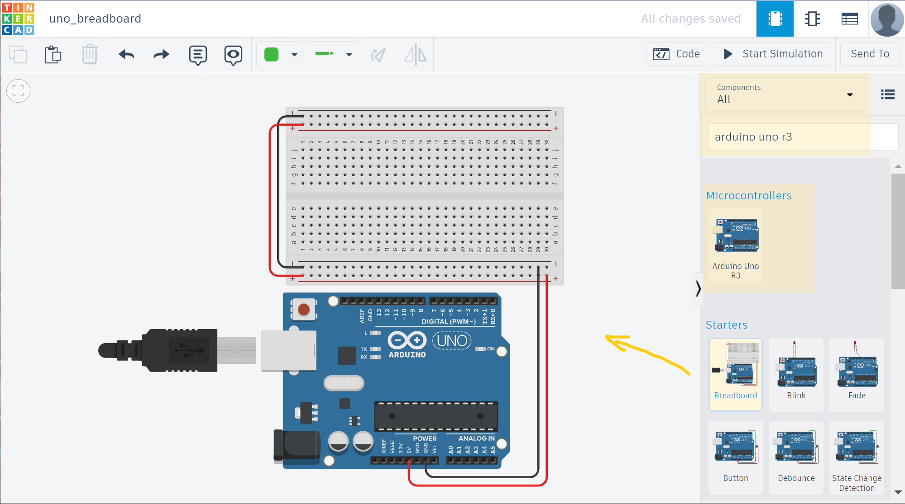
รูป: การคลิกเลือกตัวอย่าง Breadboard แล้วนำมาวางในพื้นที่สำหรับการต่อวงจร
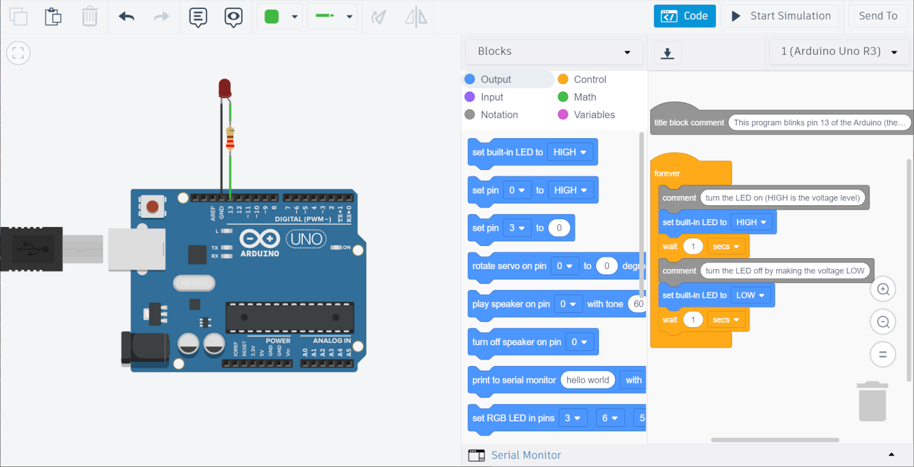
รูป: การต่อวงจร LED และตัวต้านทานอนุกรม (330 โอห์ม) โดยไม่ใช้เบรดบอร์ด (จากตัวอย่าง Blink)
▷ โหมดการเขียนโค้ด Block หรือ Text#
หากคลิกที่ปุ่ม Code จะมองเห็นโค้ดสำหรับบอร์ด Uno ของวงจรตัวอย่าง และเป็นโค้ดบล็อก (Block-based Code) คือ การต่อบล็อกคำสั่งเข้าด้วยกันให้ทำงานไปตามลำดับ (คล้าย ๆ กับการใช้งาน Google Blockly)
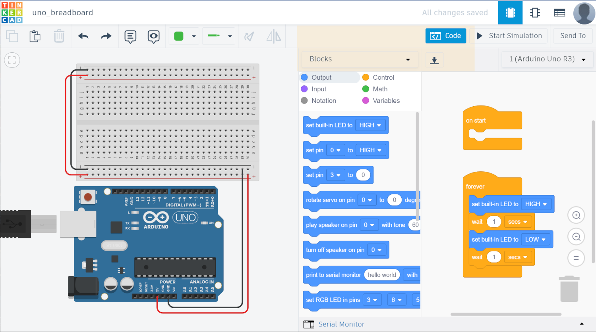
รูป: โค้ดบล็อกของวงจรตัวอย่าง
โหมด หรือ รูปแบบการเขียนโค้ด มี 3 วิธี
- Block: การเขียนโปรแกรมด้วยการต่อบล็อกคำสั่ง
- Block + Text: การเขียนโปรแกรมด้วยการต่อบล็อกคำสั่ง และแสดงผลโค้ด Arduino Sketch ที่ให้ผลเหมือนกัน (แต่แก้ไขโค้ดไม่ได้) และหากมีการแก้ไขการต่อบล็อก ก็จะมีการอัปเดตโค้ด Arduino Sketch โดยอัตโนมัติ
- Text: การเขียนโค้ด Arduino Sketch ด้วยภาษา C/C++ และใช้คำสั่งของ Arduino API
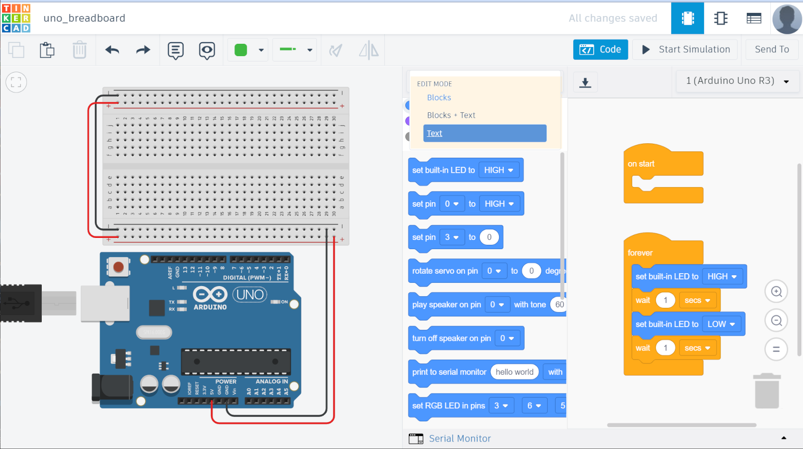
รูป: โหมดการเขียนโค้ดสำหรับ Arduino Uno ใน Tinkercad Circuits
แต่ในบทความนี้จะกล่าวถึง เฉพาะการเขียนโค้ด Arduino Sketch (เป็นแบบ Text-based Mode) การเลือกเขียนโค้ดในโหมด Text ซึ่งจะทำให้เห็นโครงสร้างพื้นฐานของโค้ด Arduino Sketch และผู้ใช้สามารถนำโค้ดจากแหล่งอื่นมาเพิ่มหรือแก้ไขดัดแปลงได้สะดวก
▷ ตัวอย่างโค้ด LED Blink และการจำลองการทำงานแบบอินเทอร์แอคทีฟ#
ถัดไปเป็นการทดลองตัวอย่างโปรเจกต์ และจำลองการทำงานเสมือนจริง
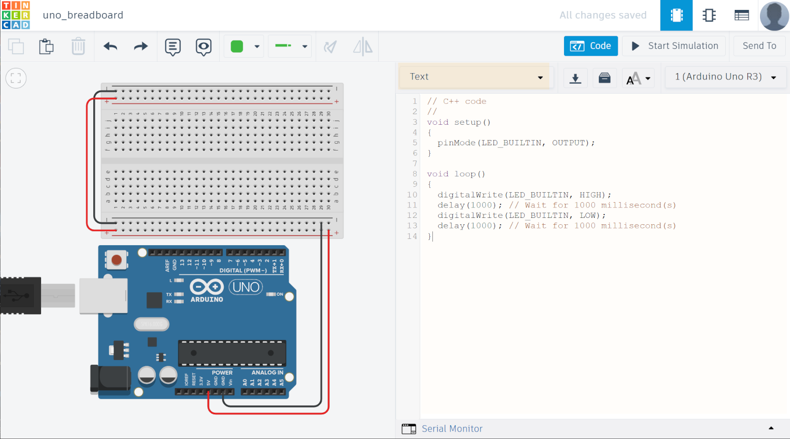
รูป: การเลือกเขียนโค้ดในโหมด Text
โครงสร้างของโค้ด Arduino Sketch ประกอบด้วยฟังก์ชันที่สำคัญ 2 ฟังก์ชัน ดังนี้
void setup(){...}ฟังก์ชันนี้มีคำสั่งอยู่ภายใน เมื่อโปรแกรมเริ่มต้นทำงาน ฟังก์ชันนี้จะทำงานเพียงครั้งเดียวหรือรอบเดียว เมื่อจบการคำสั่งสุดท้ายที่อยู่ภายในฟังก์ชันนี้ ฟังก์ชันloop()จึงจะทำงานเป็นลำดับถัดไปvoid loop(){...}ฟังก์ชันนี้มีคำสั่งที่จะต้องทำซ้ำไปเรื่อย ๆ กล่าวคือ เมื่อทำคำสั่งสุดท้ายที่อยู่ภายในฟังก์ชันนี้แล้ว จะวนซ้ำไปเรื่อย ๆ โดยกลับไปทำเริ่มคำสั่งแรกและคำสั่งถัดไปตามลำดับในฟังก์ชันนี้อีกรอบ
การเขียนโปรแกรม Arduino Sketch ก็มักเกี่ยวข้องกับการใช้งานขา I/O ของชิปไมโครคอนโทรลเลอร์ โดยใช้คำสั่งต่าง ๆ ตามที่มีการกำหนดไว้โดย Arduino API
- การควบคุมการทำงานของขา I/O ที่เป็นขาดิจิทัล เช่น การกำหนดทิศทางของขา I/O ให้เป็นเอาต์พุต และเขียนค่าสถานะลอจิกที่ขาเอาต์พุต เป็นลอจิก HIGH หรือ LOW หรือ การใช้งานเป็นขาอินพุต แล้วอ่านค่าดิจิทัลหรือค่าบิต ซึ่งจะได้ค่าเป็น 0 (LOW) หรือ 1 (HIGH)
- การอ่านค่าหรือแปลงค่าจากสัญญาณแอนะล็อกโดยใช้ขาอินพุตแบบแอนะล็อก และได้ค่าเป็นเลขจำนวนเต็ม
- การหน่วงเวลา หรือ อ่านค่าเวลาของระบบ
- การส่งข้อความแสดงผลออกทางช่องสัญญาณที่เรียกว่า Serial Port ไปยังคอมพิวเตอร์ของผู้ใช้
ตัวอย่างโค้ด: LED Blink
// C++ code
//
void setup()
{
pinMode(LED_BUILTIN, OUTPUT);
}
void loop()
{
digitalWrite(LED_BUILTIN, HIGH);
delay(1000); // Wait for 1000 millisecond(s)
digitalWrite(LED_BUILTIN, LOW);
delay(1000); // Wait for 1000 millisecond(s)
}
คำอธิบายโค้ดตัวอย่าง: LED Blink
- การใส่คำอธิบายโค้ดแบบหนึ่งบรรทัด (Single-Line Code Comment)
ในภาษา C/C++ เริ่มต้นด้วยสัญลักษณ์
//(Double Slashes) - ในฟังก์ชัน์
setup()มีคำสั่งpinMode(LED_BUILTIN, OUTPUT)ใช้กำหนดว่า ขาดิจิทัลที่ตรงกับค่าของLED_BUILTIN(สำหรับ Uno คือ ขา D13 หรือ ขาที่มีวงจร LED อยู่บนบอร์ด) จะถูกใช้เป็นขาเอาต์พุต - ในฟังก์ชัน
loop()มีคำสั่งdigitalWrite(LED_BUILTIN, HIGH)เป็นการกำหนดสถานะลอจิก หรือ การเขียนค่าดิจิทัลให้ขาเอาต์พุตที่ตรงกับLED_BUILTINให้มีค่าเป็นHIGHและได้ระดับแรงดันไฟฟ้าใกล้เคียง +5V หรือน้อยกว่า (VCC=+5V ของบอร์ด Uno) ซึ่งจะทำให้ LED บนบอร์ดอยู่ในสถานะ ON (สว่าง) แต่ถ้าเขียนค่าเป็นLOWก็จะทำให้ LED บนบอร์ดอยู่ในสถานะ OFF (ดับ) เนื่องจากะได้ระดับแรงดันไฟฟ้า 0V - คำสั่ง
delay(1000)ใช้สำหรับการหน่วงเวลาก่อนทำคำสั่งถัดไปตามลำดับ ในตัวอย่างนี้ มีการรอเวลา 1000 มิลลิวินาที - การทำงานของโค้ดตัวอย่างโดยรวม ก็คือ การกำหนดสถานะลอจิกของวงจร
LED ให้มีสถานะติดและดับสลับกันไป โดยเว้นช่วงเวลาประมาณ 1 วินาที
ถ้าต้องการเพิ่มอัตราการกระพริบของ LED ก็ให้ลดการหน่วงเวลาในคำสั่ง
delay(...)
กลุ่มคำสั่งของ Arduino API ที่สำคัญและมีการใช้งานบ่อยในการเขียนโค้ด คือ คำสั่งเกี่ยวกับการทำงานในเชิงเวลา เช่น
millis( )ได้ค่าตัวเลขจำนวนเต็ม ขนาด 32 บิต หน่วยเป็นมิลลิวินาที เริ่มนับตั้งแต่มีการรีเซตการทำงานของไมโครคอนโทรลเลอร์micros( )ได้ค่าตัวเลขจำนวนเต็ม ขนาด 32 บิต หน่วยเป็นไมโคริวินาที เริ่มนับตั้งแต่มีการรีเซตการทำงานของไมโครคอนโทรลเลอร์delay( msec )เป็นการหน่วงเวลาไวก่อนทำคำสั่งถัดไป ตามค่าตัวเลขจำนวนเต็มที่ต้องการหน่วยเป็นมิลลิวินาทีdelayMicroseconds( usec )เป็นการหน่วงเวลาไวก่อนทำคำสั่งถัดไป ตามค่าตัวเลขจำนวนเต็มที่ต้องการุ หน่วยเป็นไมโครวินาที
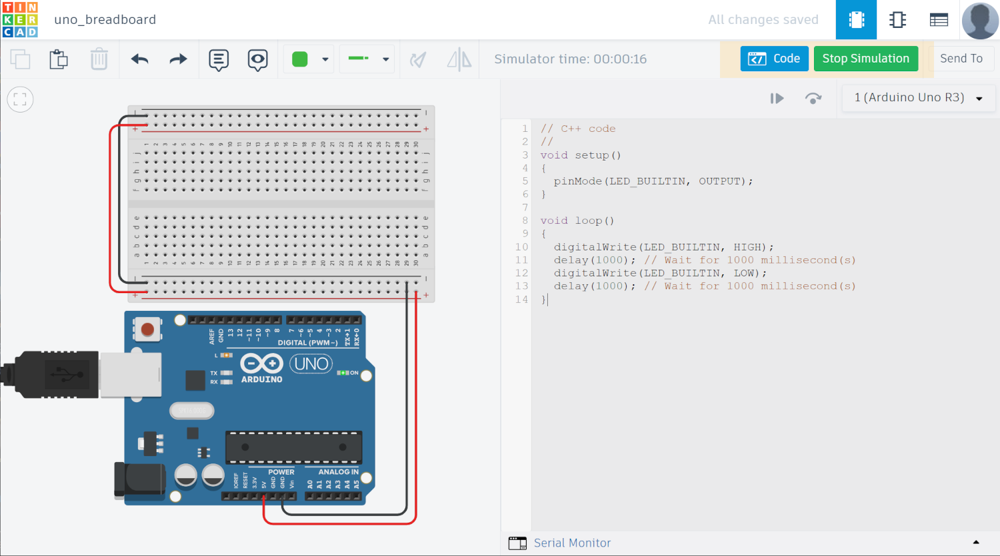
รูป: การจำลองการทำงานของวงจรและโค้ด (กดปุ่ม Start / Stop Simulation)
เมื่อเข้าสู่โหมดการจำลองการทำงาน ผู้ใช้สามารถกดคลิกบรรทัดในโค้ด เพื่อใช้เป็นตำแหน่งหยุดชั่วคราว หรือ เรียกว่า Breakpoint และสามารถกำหนดตำแหน่งหยุดในโค้ดได้มากกว่าหนึ่งบรรทัด
เมื่อทำคำสั่งมาถึงบรรทัดใด ๆ ที่ถูกกำหนดไว้เป็น Breakpoint โปรแกรมก็จะหยุดทำงานชั่วคราว หากต้องการให้ทำงานต่อ ก็ให้กดปุ่ม Resume Simulation
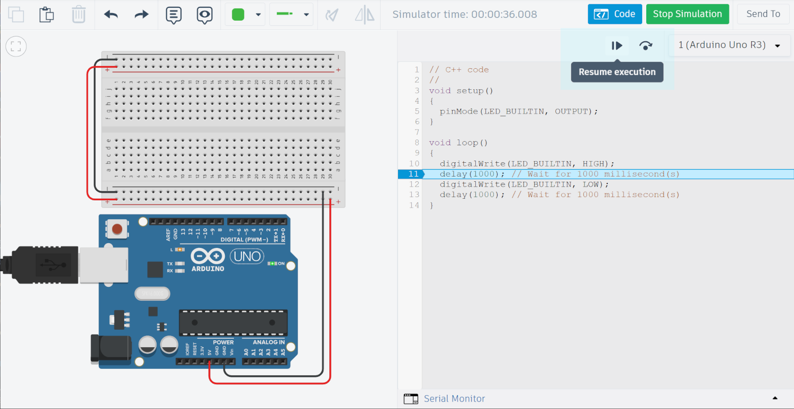
รูป: การกำหนดตำแหน่งหยุดชั่วคราวโดยเลือกบรรทัดในโค้ด Arduino Sketch
วงจร LED ที่ขนาดเล็ก (แอลอีดีเป็นแบบ SMD) จึงมองเห็นได้ไม่ชัดเจนนัก ผู้ใช้สามารถต่อวงจร LED เพิ่มอีกหนึ่งชุดบนเบรดบอร์ดได้ โดยจะต้องต่อตัวต้านทานอนุกรมด้วย เพื่อจำกัดกระแสไฟฟ้าที่ไหลผ่านตัว LED ถ้ามีปริมาณกระแสสูงมากเกินไปจะทำให้ LED พังเสียหาย
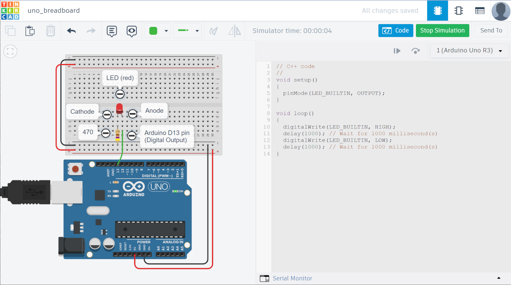
รูป: การต่อวงจรบนเบรดบอร์ด โดยใช้ LED และตัวต้านทานจำกัดปริมาณกระแส (Current-limiting Resistor)
▷ การใช้งานมัลติมิเตอร์เสมือนจริง (Multimeter)#
หากต้องการวัดแรงดันไฟฟ้าตกคร่อมและปริมาณกระแสที่ไหล (Current Flow) ผ่านตัว LED ในช่วงเวลาที่ขาเอาต์พุตเป็น HIGH ก็สามารถใช้มัลติมิเตอร์ ตามตัวอย่างต่อไปนี้
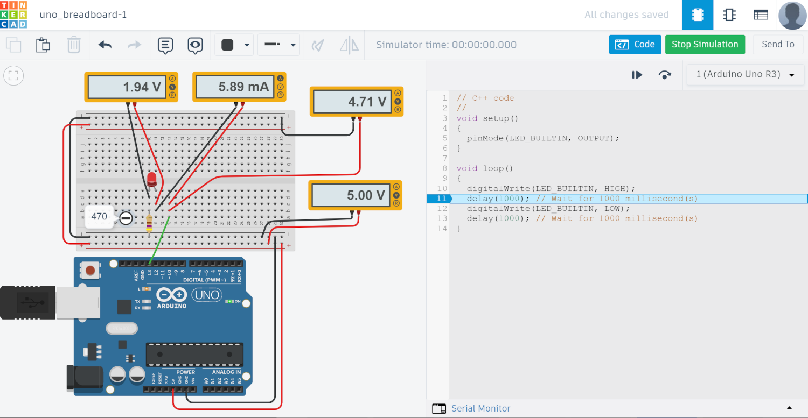
รูป: การวัดแรงดันไฟฟ้าและกระแสในวงจร (เมื่อใช้ความต้านทาน 470 โอหม์)
จากตัวอย่างผลการจำลองการทำงาน จะเห็นได้ว่า ถ้าใช้ค่าความต้านทานลดลง จะทำให้มีกระแสไฟฟ้าไหลผ่าน LED มากขึ้น ถ้าต่อวงจรจริง หากกระแสไหลมากขึ้น จะทำให้ LED สว่างมากขึ้น แต่ถ้าทำให้กระแสไหลมากขึ้นไปอีก (เช่น ลดความต้านทาน) จนถึงระดับหนึ่ง จะทำให้ LED เสียหาย เกิดการแตกชำรุดจากความร้อนสะสมสูง
ข้อควรระวัง
- LED แต่ละสีและขนาด มีคุณสมบัติทางไฟฟ้าแตกต่างกัน ปริมาณกระแสไฟฟ้าสูงสุดที่ทนใดก็แตกต่างกัน โดยทั่วไปแล้ว ปริมาณกระแสไฟฟ้าต่อเนื่อง (Continuous DC Forward Current) ไม่ควรสูงกว่า 20mA สำหรับ LED ขนาด 5mm
- ความสามารถในการทนกระแสที่ขา I/O ของชิปไมโครคอนโทรลเลอร์บนบอร์ด Arduino Uno ก็มีระดับจำกัด และไม่ควรเกิน 25mA (Peak DC Current per I/O Pin ไม่เกิน 40 mA)
- การต่อวงจร LED โดยไม่ต่อตัวต้านทานอนุกรมอยู่ด้วย จึงถือว่า ไม่ถูกต้อง และไม่ควรทำ

รูป: การวัดแรงดันไฟฟ้าและกระแสในวงจร (เมื่อใช้ความต้านทาน 100 โอหม์)
คำถาม:
- ปริมาณกระแสที่ไหลผ่านตัว LED ในวงจร มีความสัมพันธ์ (แนวโน้ม) เป็นอย่างไรกับระดับแรงดันไฟฟ้าของขา I/O ที่ใช้เป็นเอาต์พุตสำหรับวงจร LED เมื่อเอาต์พุตมีสถานะลอจิกเป็น HIGH
▷ การใช้งานเครื่องมือวัดสัญญาณเสมือนจริง (Oscilloscope)#
จากตัวอย่างวงจรและโค้ดสาธิตที่ทำให้ LED กระพริบได้ด้วยอัตราคงที่ ถ้าหากปรับอัตราการกระพริบให้เร็วขึ้น ก็มองหรือสังเกตด้วยตาเปล่า ก็อาจจะไม่ใช่วิธีที่เหมาะสม ดังนั้นเครื่องมือวัดทางไฟฟ้า อย่างเช่น "ออสซิลโลสโคป" (Oscilloscope) จึงเป็นอีกวิธีหนึ่งที่ช่วยให้เห็นการเปลี่ยนแปลงระดับแรงดันในเชิงเวลาที่เป็นแอมพลิจูดของสัญญาณไฟฟ้า
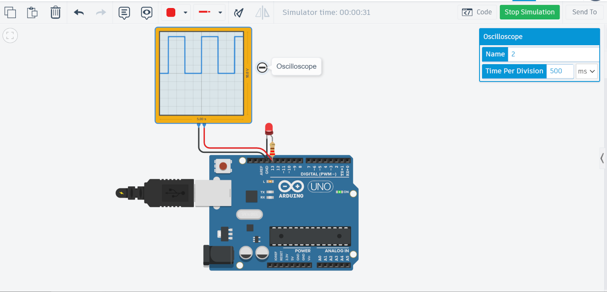
รูป: ตัวอย่างการใช้งานออสซิลโลสโคปแบบเสมือนจริง แสดงรูปคลื่นสัญญาณเอาต์พุตที่ขา D13
โค้ด Arduino Sketch ต่อไปนี้ สาธิตการทำให้ LED เปลี่ยนสถานะลอจิก
โดยสลับสถานะลอจิก (LED State Toggle) ไปมาระหว่าง LOW และ HIGH
ตามช่วงเวลาที่กำหนดไว้ (Time Interval) โดยใช้ค่าคงที่ intervalMsec
และมีค่าตัวเลขในหน่วยเป็นมิลลิวินาที
โค้ดตัวอย่าง: LED Blink without Delays
// [Constants]
// Specify the Arduino pin used for LED output
const int ledPin = LED_BUILTIN;
// Set the LED toggle interval time (in msec)
const unsigned long intervalMsec = 1000;
// [Global variables]
// Declare a variable (with initialization)
// used to save the last update time for the LED
unsigned long previousMillis = 0;
// Declare a variable (with initialization)
// used to keep the current LED state
int ledState = LOW;
void setup() {
pinMode(ledPin, OUTPUT); // Set output pin direction
}
void loop() {
// Read the current time (in msec)
unsigned long now = millis();
// Compute the time difference and check the update condition
if (now - previousMillis >= intervalMsec) {
// Update the last update time
previousMillis = now;
// Toggle LED state
ledState = !ledState;
// Write the LED output pin using the current LED state
digitalWrite(ledPin, ledState);
}
}
หลักการทำงานของโค้ด
- ในฟังก์ชัน
setup()เมื่อได้กำหนดทิศทางของขาledPinซึ่งตรงกับLED_BUILTINให้เป็นเอาต์พุตแล้ว (และมีสถานะลอจิกเริ่มต้นเป็น LOW) จากนั้นจึงเข้าสู่การทำงานของฟังก์ชันloop() - โปรแกรมจะทำต้องค่อยอ่านค่าเวลาของระบบด้วยคำสั่ง
millis()ของ Arduino API และเก็บค่าตัวเลขไว้ในตัวแปรnowก่อนจะนำไปเปรียบเทียบกับค่าของตัวแปรpreviousMillis - ถ้าผลต่างของตัวแปร
nowกับตัวแปรpreviousMillisมากกว่าหรือเท่ากับ ค่าของintervalMsecแสดงว่า ถึงเวลาแล้วที่จะต้องมีการสลับสถานะลอจิกที่ขาเอาต์พุตสำหรับ LED และเมื่อสลับสถานะลอจิกแล้ว ให้อัปเดตค่าของตัวแปรpreviousMillisด้วยเช่นกัน - การตรวจสอบเงื่อนไขนี้ จะเกิดขึ้นซ้ำไปเรื่อย ๆ เนื่องจากอยู่ในฟังก์ชัน
loop()
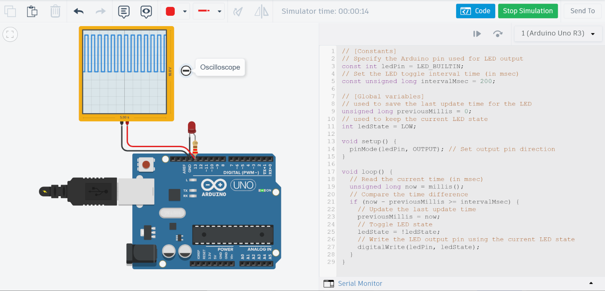
รูป: รูปคลื่นสัญญาณเอาต์พุตที่ขา D13 ที่มีความถี่สูงขึ้น (ตั้งค่าช่วงเวลาเป็น 200 มิลลิวินาที จากเดิมที่ใช้ค่า 1000 มิลลิวินาที)
▷ กล่าวสรุป#
บทความนี้นำเสนอการทดลองวงจรตัวอย่างที่มีการใช้งานบอร์ด Arduino Uno R3 และมีอยู่ใน AUTODESK Tinkercad Circuits โดยเริ่มต้นด้วยตัวอย่างวงจรและการเขียนโค้ดพื้นฐาน เช่น LED Blink เพื่อทำให้เกิดการกระพริบของวงจร LED บนบอร์ด Arduino Uno หรือต่อวงจร LED เพิ่มบนเบรดบอร์ด
แนะนำให้ศึกษาบทความที่เกี่ยวข้องต่อไปนี้
- การใช้งานบอร์ด Arduino ควบคู่กับการทดลองไฟฟ้าและอิเล็กทรอนิกส์
- การต่อวงจรไฟฟ้าและอิเล็กทรอนิกส์พื้นฐานบนแผงต่อวงจร
- แนะนำซอฟต์แวร์: Autodesk Tinkercad Circuits
This work is licensed under a Creative Commons Attribution-ShareAlike 4.0 International License.
Created: 2023-12-16 | Last Updated: 2023-12-17